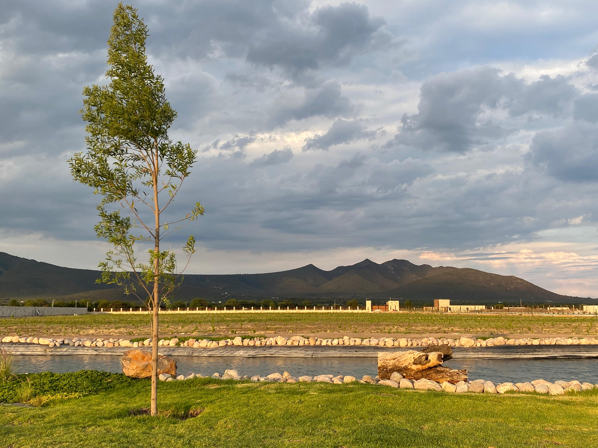
La tierra
Donde comienza todo
Mata de Uva es un espacio donde la tradición se vive a través del vino, la tierra y las personas. Donde cada experiencia se construye desde lo emocional.
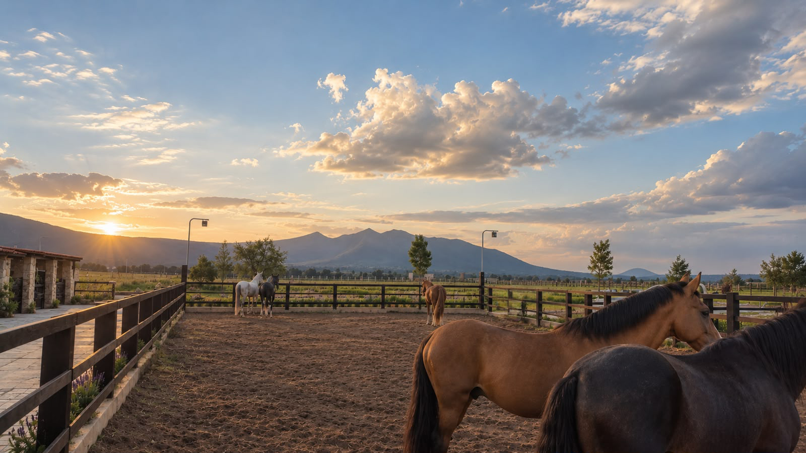
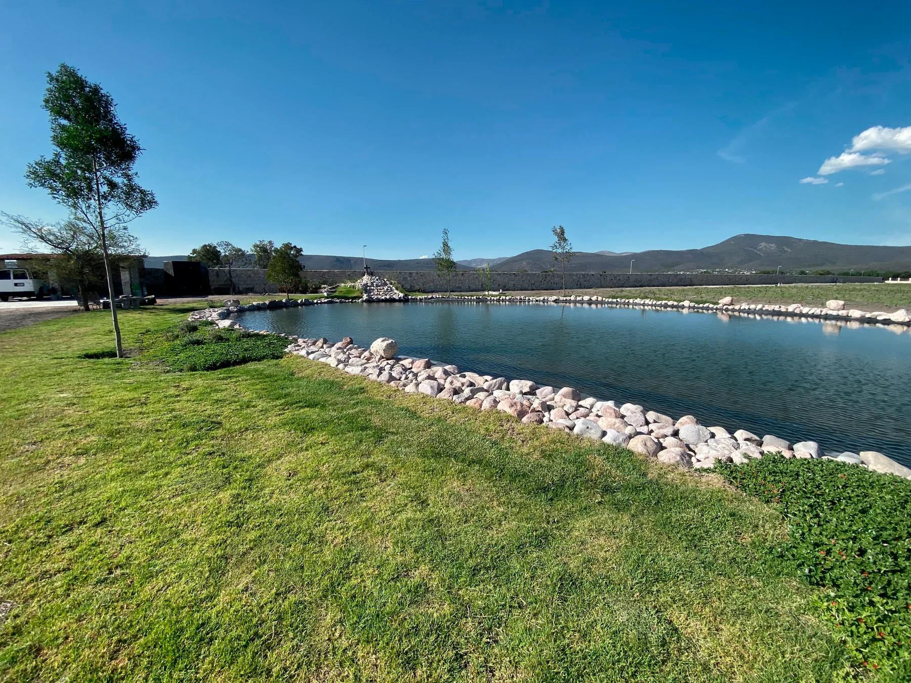
La experiencia de
Vivir Mata de Uva
Mata de Uva es un espacio para encontrarse, celebrar y disfrutar del paisaje. Un lugar que puede adaptarse a diferentes momentos, desde una celebración especial hasta una experiencia más cercana con el viñedo.
Cada ocasión tiene su propia forma de vivirse. Por eso, creamos espacios que pueden transformarse de acuerdo con lo que quieres celebrar, siempre rodeados por la naturaleza y la esencia del viñedo.
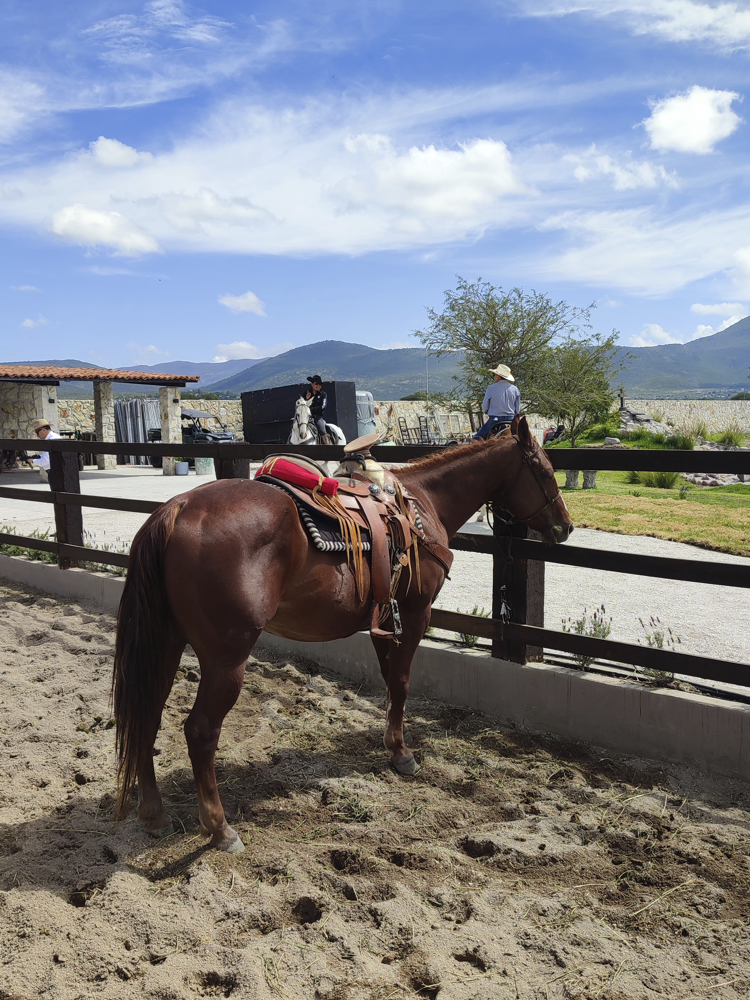

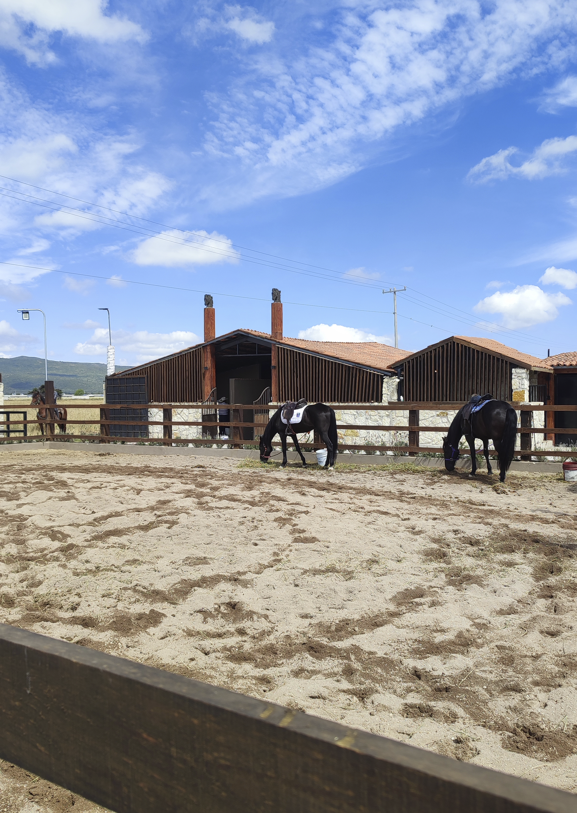
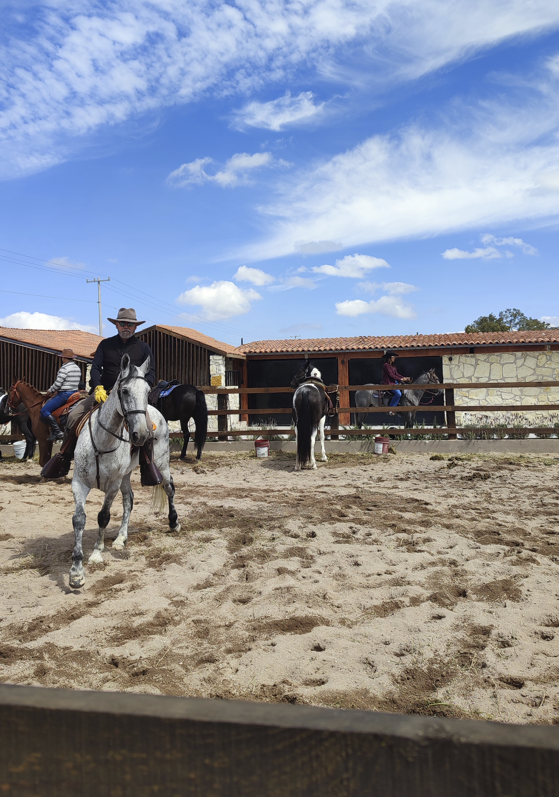
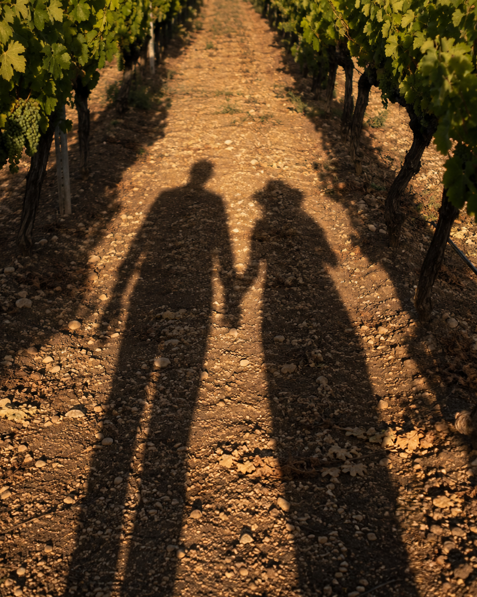
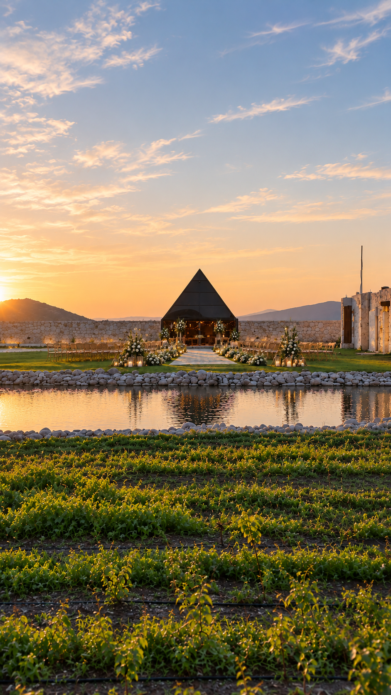
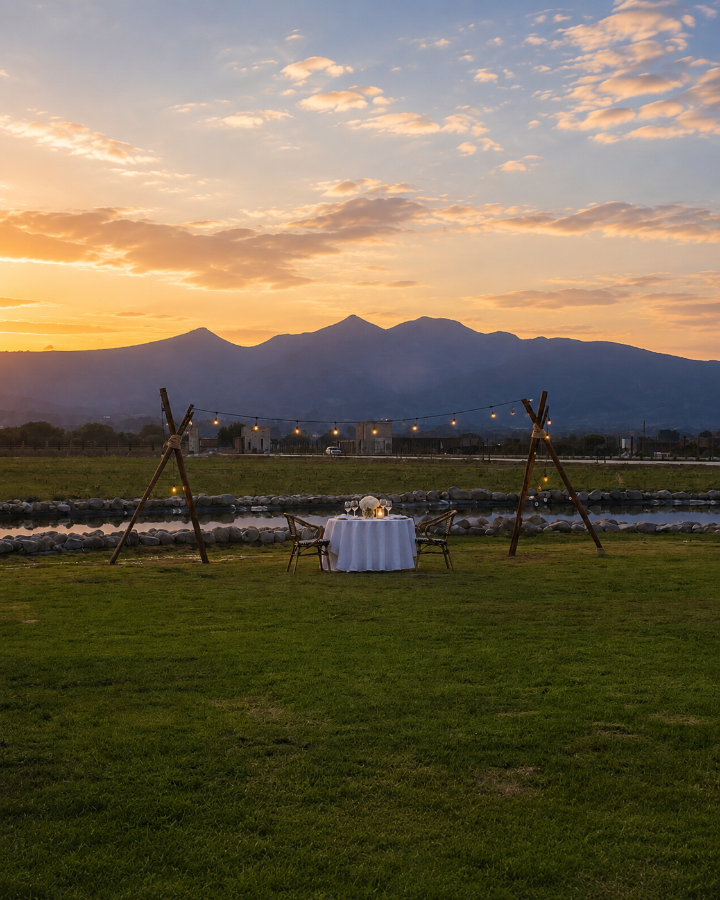

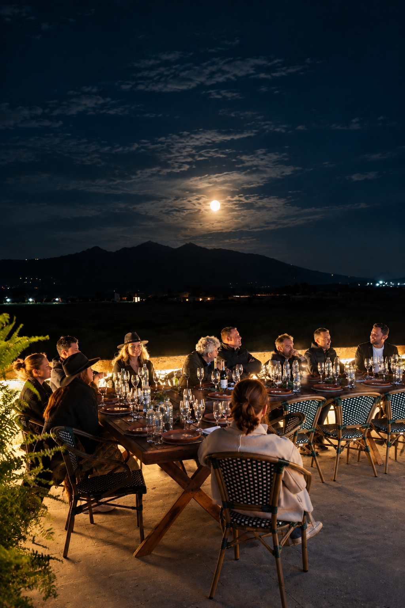
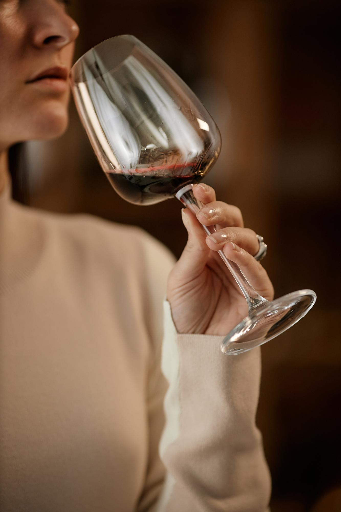
Cada espacio
tiene su encanto


La historia
Apenas comienza
Mata de Uva es un proyecto que crece con el tiempo.
Hoy, nuestras vides forman parte del paisaje y nuestras puertas se abren para recibir celebraciones, encuentros y experiencias alrededor del viñedo. Mañana, esta historia tendrá una nueva forma.
Nuestro propio vino será parte de ese futuro.
Ven a conocer
Mata de Uva
Un viñedo para celebrar, compartir y descubrir una forma diferente de vivir el paisaje.
por WhatsApp, abre en otra pestaña